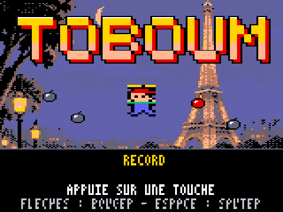
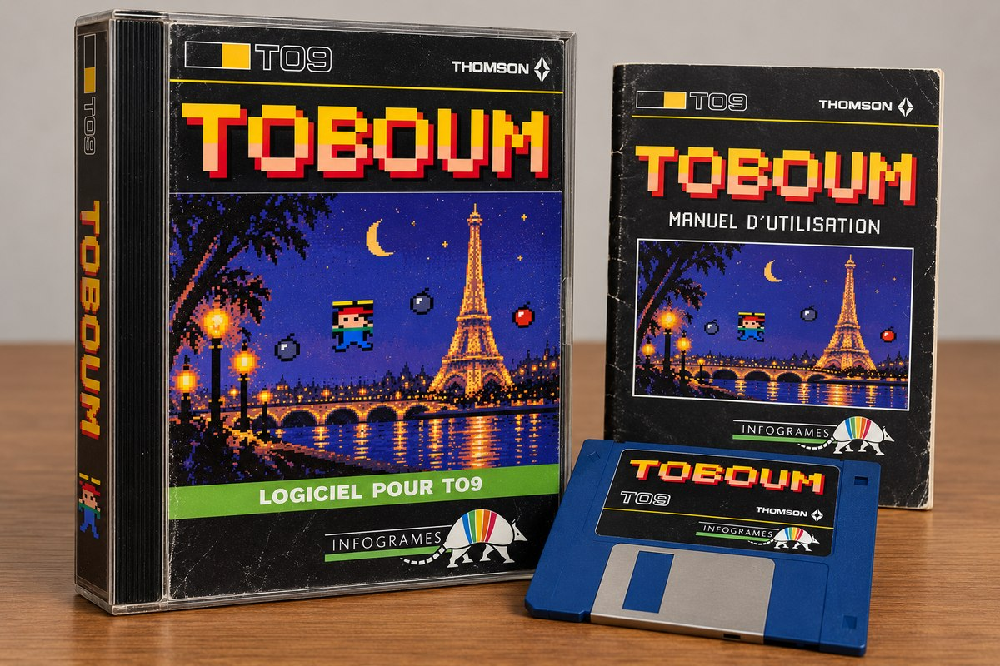
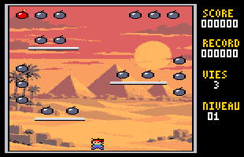
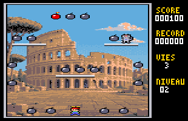
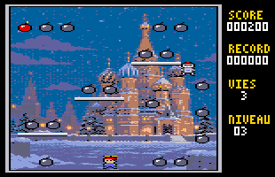
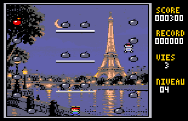
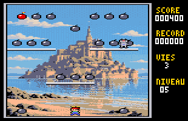
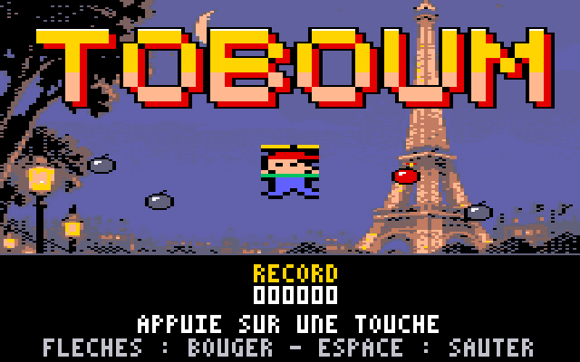
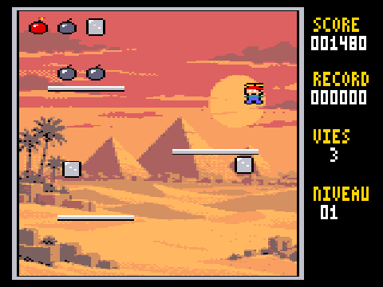

Toto et sa casquette à hélice doivent ramasser les 18 bombes de chaque niveau. Un jeu de plates-formes neuf pour votre Thomson, inspiré de Bomb Jack. Gratuit, il se joue dans l'émulateur DCMOTO en trois étapes.

Pas à pas
Pas besoin d'un vrai TO9 : l'émulateur DCMOTO transforme votre PC en Thomson. Comptez cinq minutes la première fois.
-
Installez l'émulateur DCMOTO
DCMOTO est gratuit. Téléchargez-le, décompressez le fichier zip, puis lancez dcmoto.exe. Les mémoires mortes des Thomson sont incluses : rien d'autre à chercher.
Il fonctionne sous Windows. Sur Mac ou Linux, il se lance avec Wine.
-
Choisissez le TO9 et insérez la disquette
Dans DCMOTO, choisissez la machine TO9 (TO8 et TO9+ conviennent aussi). Puis placez dans le lecteur le fichier TOBOUM.fd que vous avez téléchargé.
Dans les menus de DCMOTO
-
Démarrez et tapez la commande
Redémarrez l'ordinateur émulé (touche Échap). Au menu du TO9, choisissez 3 - BASIC 128. Sur TO8 et TO9+, prenez le BASIC 512. Tapez ensuite la commande, puis Entrée.
À taper sur le Thomson
RUN"TOBOUM"
En cas de souci
- La disquette ne se lit pas sur TO9
- Le BASIC 1.0 du TO9 ne sait pas lire les disquettes : revenez au menu et choisissez 3 - BASIC 128.
- L'écran titre ne bouge pas
- C'est normal : il affiche le record et attend. Appuyez sur une touche, ou sur le bouton de la manette.
- Toto ne saute pas en courant
- Le clavier du TO9 ne transmet qu'une touche à la fois. Partez en courant, puis appuyez sur ↑ : Toto garde son élan en l'air.
- C'est trop difficile
- La touche G rend Toto invincible pour découvrir les niveaux, et N passe au suivant. La partie ne compte alors pas pour le record.
Les commandes
Pour diriger Toto
| Touche | Effet |
|---|---|
| ←→ | Marcher. En l'air, Toto garde son élan. |
| ↑ ou Espace | Sauter, très haut. Gardez la touche enfoncée en retombant pour une chute lente. |
| ↑ de nouveau en l'air | Freiner : Toto s'arrête un instant. En tapotant, il plane. |
| ↓ | En l'air : saut court, chute rapide, arrêt de l'élan. |
| Manette 1 | Directions, et le bouton pour sauter. À la manette, on peut combiner les deux. |
Les options
| Touche | Effet |
|---|---|
| S | Bruitages oui ou non |
| G | Mode invincible, pour découvrir (bord blanc) |
| N | En mode invincible : niveau suivant |
| F | Cadence d'affichage : 25 images par seconde (par défaut) ou libre |
Le jeu
Chaque niveau cache 18 bombes. On peut les ramasser dans n'importe quel ordre, mais l'une d'elles est allumée, en rouge : la prendre rapporte le double et allume la suivante, toujours dans le même ordre. Il y a donc un parcours idéal à trouver, et c'est tout le sel du jeu.
Pendant ce temps, les ennemis arrivent un par un. Plus on traîne sur un niveau, plus ils viennent souvent et plus ils vont vite. Un contact coûte une vie, sur trois.
Les règles en bref
- Bombe éteinte : 100 points. Bombe allumée : 200 points.
- Bonus de chaîne en fin de niveau : de 10 000 points pour 15 bombes allumées à 50 000 points pour les 18.
- La pièce éclair apparaît quand la jauge est pleine. Elle rebondit partout ; si Toto l'attrape, les ennemis se changent en glaçons pendant 5 secondes et rapportent des points.
- Saut : 10 points à chaque décollage.
Les ennemis
- Le robot tombe, puis marche sur les plateformes. S'il touche le sol, il se transforme en volant.
- La chauve-souris poursuit Toto.
- La boule rebondit.
- Le nuage dérive et descend vers Toto.








Les coulisses
Le TO9 n'a pas de sprites matériels : tout ce qui bouge doit être effacé puis redessiné, octet par octet, sans que l'image ne scintille. TOboum y arrive en suivant le balayage de l'écran au cycle près, entièrement en assembleur 6809.
Le jeu a été entièrement « vibecodé » avec Claude, l'assistant d'Anthropic : le moteur, les sprites, les outils et un simulateur de TO9 pour tout tester. Les décors ont été générés par un modèle d'image à partir de descriptions en texte, puis convertis en 16 couleurs pour le TO9.
Le code source complet est libre (licence MIT), avec les pièges rencontrés en chemin.
Code source sur GitHub- Sprites compilésChaque image de sprite devient du code 6809 : les pixels transparents ne coûtent rien.
- Sans scintillementLe moteur traite d'abord les sprites du bas, avant que le faisceau y arrive, puis ceux du haut une fois qu'il est passé.
- Décors sur disquetteLes cinq décors compressés sont lus secteur par secteur à chaque niveau.
TOboum est un projet amateur, sans lien avec Koei Tecmo, Thomson ou Infogrames. Bomb Jack est une marque de Koei Tecmo. Le jeu reprend l'idée et les règles générales de Bomb Jack, mais aucune de ses données : graphismes, sons, niveaux et code ont été créés pour ce projet.
A free Bomb Jack-inspired platform game for the Thomson TO8, TO9 and TO9+, written in 6809 assembly.
DCMOTO est l'œuvre de Daniel Coulom, sur dcmoto.free.fr.

Dans ce numéro aussi : TOetris
Le jeu de blocs de la Game Boy, réécrit pour les mêmes machines, avec trois musiques et toutes les vitesses d'origine.